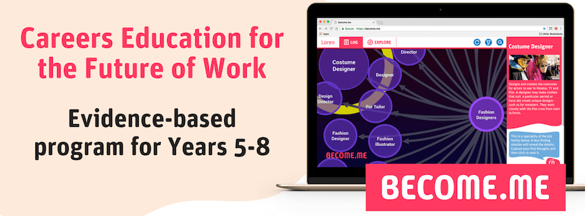
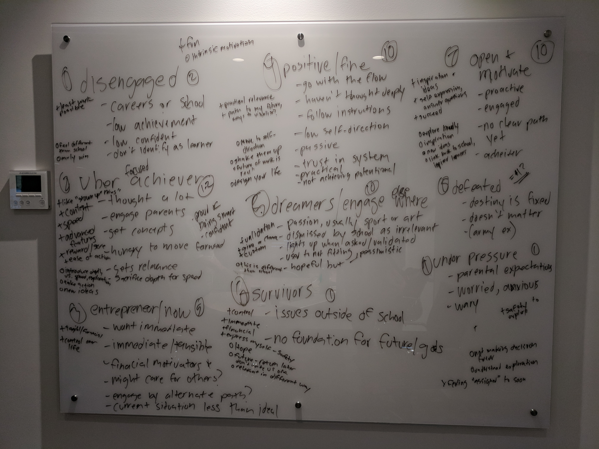
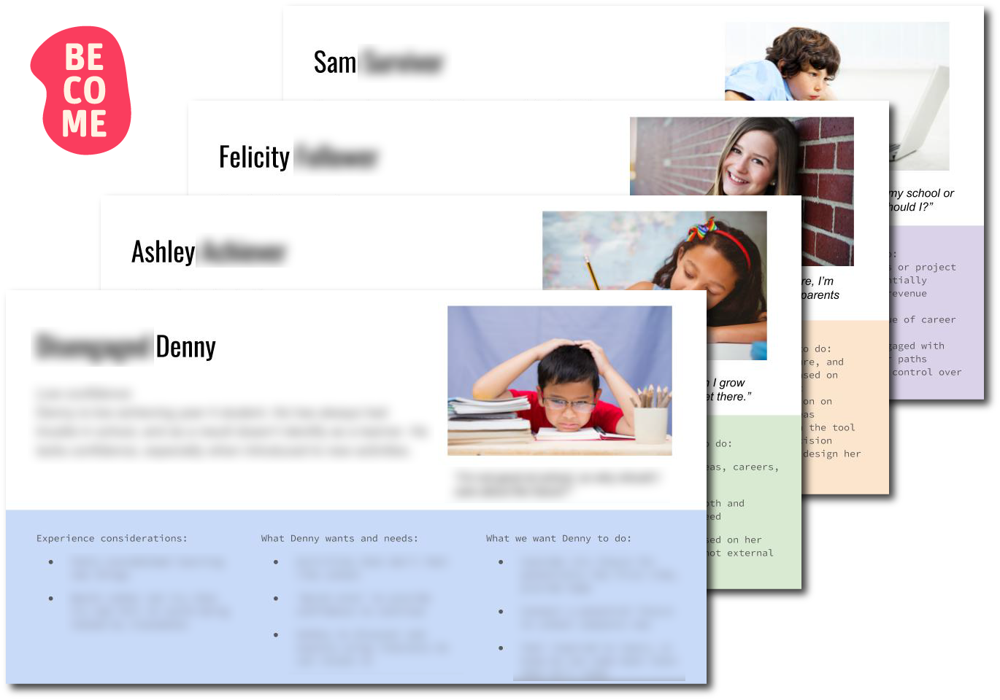
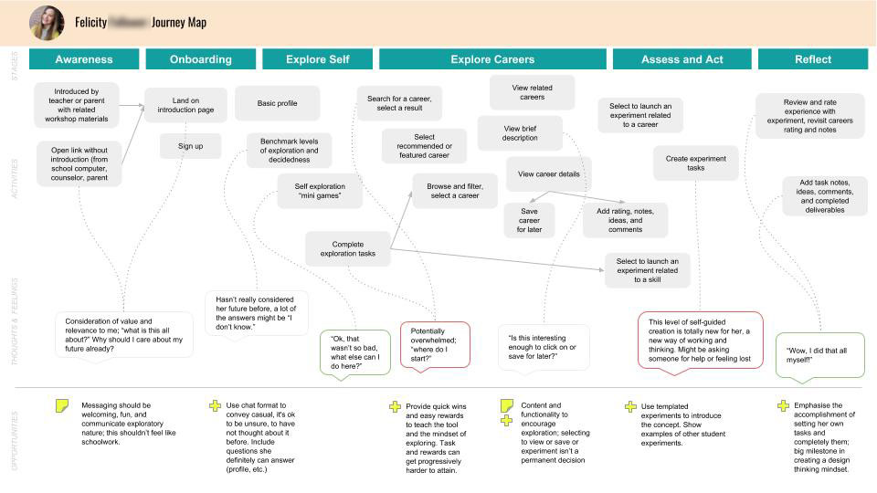
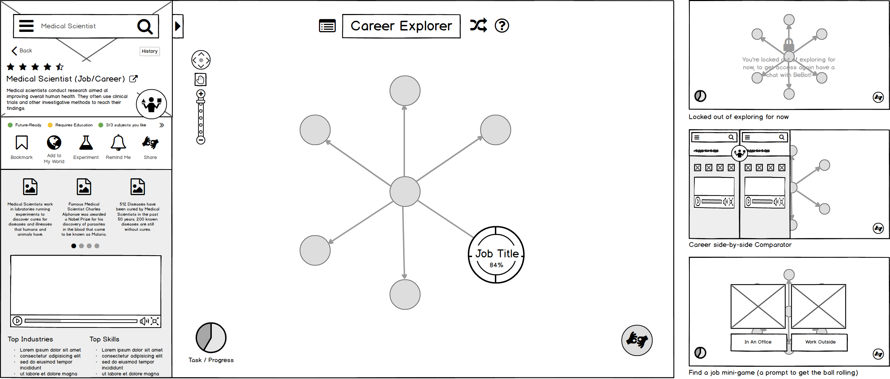
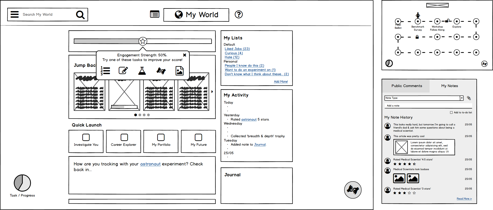
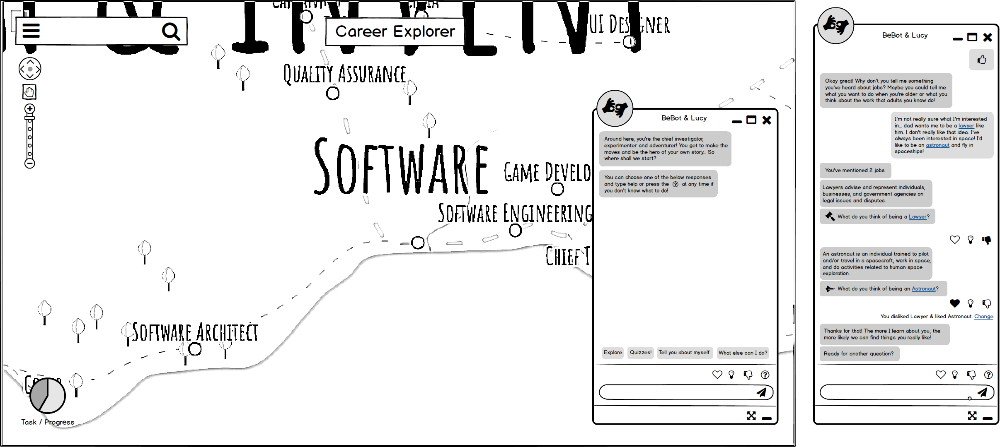

BEcoME. Education
Company
BEcoME. Education
Duration
Casual engagement over 2 months
Team
One UX lead & myself
About BEcoME.
An industry disruptor, challenging the way children tackle the new world of jobs
BEcoME. Education is on a mission to disrupt the cultural paradigm of late high-school students being forced to make sudden career decisions which impact their short to long term futures, without having the opportunity to explore who they are, what careers exist & suit them, and whether considered options will have a real place in the future economy. They’re bringing design thinking into the classroom from late primary school, so students are encouraged to explore widely and self-generate experiments to validate or invalidate their interest in a wide variety of potential futures. The desired outcome is to create a generation with an inbuilt mental framework of lifelong learning, resourcefulness and self-direction.
The opportunity
How we met
I met their technical co-founder, David Wilson, at a job fair and we connected over a discussion of their mission and its potential impact. A month later, co-founder Liv Pennie reached out to me for help generating high-level UX concepts for their digital touch-points (which fit inside a larger in-class workshop experience). I was thrilled to be considered for such a positive-impact project; having been a student with little to no context about my future until well after high-school, I was glad to have the opportunity to contribute and help educate kids about a cornerstone of their future lives.
The Challenge
Rapid generation of UI concepts that fit the research
The kick-off meeting and brief indicated that BEcoME. had a well-researched programme to achieve student outcomes, but they hadn’t yet brought their experience into a web user-interface. As such, they had the structure and wanted me to rapidly map two high-level UI concepts onto it. This way, Liv and David could start building towards a release 4-6 months later. Effectively, they needed help bringing 3 core components into a ‘single-page-feel’ experience that would make thinking about the future exciting & inspiring, motivate diverse students to actively participate, and provide students with a continual sense of progress to drive repeat engagement.
The plan
A roadmap turned lean
I came up with a 3-phase roadmap which included discovery, ideation + validation, and convergence, but it was out-of-sync with BEcoME.’s timelines and too costly (you can see my original statement of work here). As such, my plan was reformulated to be more lean and to focus mostly on ideation based on research that had already been conducted. Another UX designer was brought in to lead the project, and we set up workshops to interview the stakeholders, determine personas and formulate user journeys, which would guide the design process.
"One of the most important skills of the 21st century will be the ability to reinvent oneself quickly and repeatedly" - Utkarsh Amitabh, World Economic Forum, Oct 2018
Stakeholder presentation & interview
Absorbing pre-existing research and determining requirements
BEcoME. Kicked the project off with an information session where they passed on the central research and insights that they had accrued over time, from theory to pilot programme outcomes. It was an opportunity for Alissa and I to ask our own questions, understand the business goals and dig deeper into the insights they were sharing on their users. I paired this with some theoretical reading on the stages of human development and BEcoME.’s workshop documentation to define some implications for the user-interface and to prompt further discussion. I was wary that these insights could only be considered as assumptions until validated later on in the process (beyond the scope of my role).
User insight examples:
- Kids are influenced by social, cultural and gender roles from an early age
- Kids displayed that they do self-reflection better online, away from strong social influence
- Students were most interested, generally, in answering questions about themselves
- Students lease enjoyed missions and activities that felt like homework
- Kids often have at least one passion, but if they aren’t socially validated for it they shut it down
- Kids cannot be forced into homework
- In this phase of human development kids are transitioning, broadly, from the ‘industry vs inferiority’ to ‘identity vs role confusion’ and require encouragement to develop psychologically
Business requirement examples:
- They have core components to the UI they have invested in, and to an extent we must work around those: keylines & their artificial intelligence chatbot
- With 64k+ jobs, we want to avoid overwhelm so must display the jobs in non-daunting way
- Should be able to visually see the growth/shrinkage of roles and expectations for the future
- There must be a variety of prompts to make it exploration easy and interesting
- Don’t want to spit out a single option or ever reach an ‘ending point’
- The target age-group is broad, so we have to be careful not to alienate any sub-section
- The UI project is for the student experience, but must keep in mind the later phases which include teachers & parents
Personas Workshop
Getting to a new resolution of detail
Alissa Condra, the new UX lead on the project, planned two stakeholder workshops, which I assisted in running with both founders. The first was a persona workshop. We started this session with three high-level proto-personas provided by BEcoME.: horizon gazers, heads up students & heads down students - three representations of levels of student investment in the process. We wanted to increase the resolution and make more detailed distinctions between these personas to gain empathy for the spectrum of students. We asked the founders to list the characteristics, motivators, influences, frustrations and fears of each type, and as they got more detailed, we were able to make clear splits in the personas which morphed from 3 abstract personas into 9 personas with detailed attributes based on stakeholder knowledge of users.
We came up with an array of experience considerations, needs and goals for four central personas, to better meet the educational objectives the programme. These simple personas were tied with images and descriptions so we could relate to each individual representation and design for them.
Journey Mapping Workshop
Determining needs and requirements to support various personas through the experience
The next session we ran was a journey mapping whiteboard session, which would act as an outline of the entire functional and emotional experience from a persona’s point-of-view. Alissa did the heavy lifting in running the session, and I provided assistance and prompts to keep the conversation going and on track. We identified key moments, thoughts/feelings and opportunities to support persona needs through each of their slightly differing journeys.
“We need to add massive value to the kids so that principals will allocate their discretionary budget to funding the programme within their own schools” (paraphrased)
User stories
Setting the stage
I turned an array of user and business requirements into user stories for the students who I was designing for
As a student, I can...
- navigate easily between careers, my experiments and my portfolio
- deep dive into a career to learn more about it
- save jobs & view them later
- react to jobs which help the computer provide me with better suggestions
- visually see the growth/shrinkage of careers over time
- increase my engagement score by exploring or doing experiments
- record my experiences in a journal
- intuitively navigate the massive (64k+) job data-set in small chunks
- ...
Mass ideation
Rapidly generating creative options for the digital experience
My role was inherently focused on generating creative, out-of-the-box, ideas for the interface and fleshing out features that could meet persona needs. As such, I worked independently from Alissa to ideate and give form to my ideas, while Alissa worked on defining the site-map and higher-level experience. We met up for several sessions to share our work and incorporate one another’s models into a uniform experience, which turned out to be a very productive strategy given our differing roles. I could focus on detailing features and Alissa could focus on making sure there was holistic coherence; but in reality we crossed into one another’s domains as a unit when together.
UI Concepts
An array of ideas sketched and presented in low-fidelity wireframes made in Balsamiq. An array of ideas to encourage exploration, compare jobs, make experiments and engage in introspection with the AI chatbot.



The handover
Wireframes & a walkthrough
I handed my work over digitally, including annotated wireframes, the notes I had made throughout the process and a recorded share-screen session where I walked Alissa and the founders through the wireframes I had designed. Alissa continued the UX work without me, though we had a few phone sessions to discuss the project, and has since turned in a core MVP design which has launched as part of phase 1. Check out the information site.
Here is a video of the launched product which developed much beyond my contributions in successive design work done by Alissa and the wider team:
The big challenge for me, was that there was so little time to do any independent primary research or test/validate ideas & assumptions that were formed over the duration of the project. If I could have changed one thing, it would have been that we could have supplemented the project with user-testing with students, even if only for a day or two. Additionally, I believe it would have been wise to conduct some feature prioritization sessions to narrow and constrain our focus; this wasn’t possible at the time, which meant I was forced to handover a wide array of ideas that the rest of the team could pick from to help determine a minimum viable product.
The founders of this project were incredibly passionate, knowledgeable and thorough in their understanding of education on careers. It was a real pleasure to be involved with self-starting entrepreneurs who are creating a product with human and market value, and it struck both a personal chord and related deeply to my belief in applied design thinking. I was inspired by their business acumen and pursuit of a meaningful solution to a widespread issue.